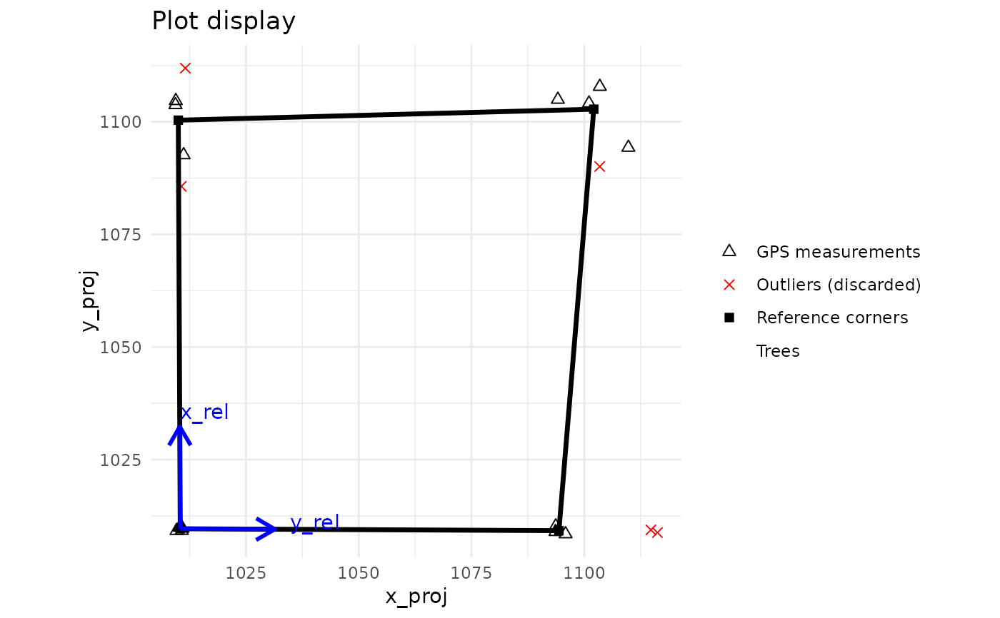

Quality check of plot corner and tree coordinates.
Usage
checkPlotCoord(
projCoord = NULL,
longlat = NULL,
relCoord,
trustGPScorners,
cornerID = NULL,
maxDist = 15,
rmOutliers = TRUE,
drawPlot = TRUE,
treeCoord = NULL
)Arguments
- projCoord
(optional, if longlat is not supplied) a data frame containing the plot corner coordinates in a projected coordinate system, with X and Y corresponding to the first and second columns respectively.
- longlat
(optional, if projCoord is not supplied) a data frame containing the plot corner coordinates in longitude and latitude, with longitude and latitude corresponding to the first and second columns respectively
- relCoord
a data frame containing the plot corner coordinates in the relative coordinates system (that of the field), with X and Y corresponding to the first and second columns respectively, and with the same row order than longlat or projCoord
- trustGPScorners
a logical indicating whether or not you trust the GPS coordinates of the plot's corners. See details.
- cornerID
a vector indicating the ID of the corners (e.g c("SE","SE",...)) in the case you have multiple measurements for each corner
- maxDist
a numeric giving the maximum distance (in meters) above which GPS measurements should be considered outliers (default 15 m)
- rmOutliers
a logical indicating if detected outliers are removed from the coordinate calculation
- drawPlot
a logical indicating if the plot design should be displayed and returned
- treeCoord
a data frame containing at least the relative tree coordinates (field/local coordinates), with X and Y corresponding to the first and second columns respectively
Value
Returns a list including :
cornerCoord: a data frame containing the projected coordinates (x_proj and y_proj), the relative coordinates (x_rel and y_rel), and the ID (if cornerID is supplied) of the 4 corners of the plotpolygon: a spatial polygonoutliers: a data frame containing the projected coordinates, the ID (if cornerID is supplied) and the row number of GPS points considered outliersplotDesign: ifdrawPlotis TRUE, a ggplot object corresponding to the design of the plotcodeUTM: iflonglatis supplied, a character containing the UTM code of the GPS coordinatestreeProjCoord: iftreeCoordis supplied, a data frame containing the coordinates of the trees in the projected coordinate system (x_proj and y_proj)
Details
If trustGPScorners is TRUE, corner coordinates in the projected coordinate system are averaging by corner (if multiple measures) and outlier corners are identified sequentially using these averages and the maxDist argument. Then, projected coordinates of the trees are calculated from the local coordinates using a bilinear interpolation that follows the correspondence of the corners between these two coordinate systems. Be aware that this projection only works if the plot, in the relative coordinates system, is rectangular (ie, has 4 right angles).
If trustGPScorners is FALSE, corner coordinates in the projected coordinate system are calculated by a procrust analysis that preserves the shape and dimensions of the plot in the local coordinate system. Outlier corners are also identified sequentially and projected coordinates of the trees are calculated by applying the resulting procrust analysis.
If longlat is supplied instead of projCoord, the function will first convert the long/lat coordinates into UTM coordinates. An error may result if the parcel is located right between two UTM zones. In this case, the user has to convert himself his long/lat coordinates into any projected coordinates which have the same dimension than his local coordinates (in meters most of the time).
Examples
projCoord <- data.frame(
X = c(
runif(5, min = 9, max = 11), runif(5, min = 8, max = 12),
runif(5, min = 80, max = 120), runif(5, min = 90, max = 110)
),
Y = c(
runif(5, min = 9, max = 11), runif(5, min = 80, max = 120),
runif(5, min = 8, max = 12), runif(5, min = 90, max = 110)
)
)
projCoord <- projCoord + 1000
relCoord <- data.frame(
X = c(rep(0, 10), rep(100, 10)),
Y = c(rep(c(rep(0, 5), rep(100, 5)), 2))
)
cornerID <- rep(c("SW","NW","SE","NE"),e=5)
aa <- checkPlotCoord(
projCoord = projCoord, relCoord = relCoord,
trustGPScorners = TRUE, cornerID = cornerID,
rmOutliers = FALSE , drawPlot = FALSE
)
#> Warning: please, use check_plot_coord() instead of checkPlotCoord(). `checkPlotCoord` will be removed in the next version
bb <- checkPlotCoord(
projCoord = projCoord, relCoord = relCoord,
trustGPScorners = FALSE,
rmOutliers = TRUE, maxDist = 10,
drawPlot = FALSE
)
#> Warning: please, use check_plot_coord() instead of checkPlotCoord(). `checkPlotCoord` will be removed in the next version
# \donttest{
checkPlotCoord(
projCoord = projCoord, relCoord = relCoord,
trustGPScorners = TRUE, cornerID = cornerID,
rmOutliers = TRUE , maxDist = 10,
drawPlot = TRUE
)
#> Warning: please, use check_plot_coord() instead of checkPlotCoord(). `checkPlotCoord` will be removed in the next version
 #> $cornerCoord
#> x_proj y_proj x_rel y_rel cornerID
#> 1 1010.415 1009.665 0 0 SW
#> 9 1094.374 1009.251 100 0 SE
#> 12 1102.096 1102.775 100 100 NE
#> 6 1009.983 1100.338 0 100 NW
#>
#> $polygon
#> Geometry set for 1 feature
#> Geometry type: POLYGON
#> Dimension: XY
#> Bounding box: xmin: 1009.983 ymin: 1009.251 xmax: 1102.096 ymax: 1102.775
#> CRS: NA
#> POLYGON ((1010.415 1009.665, 1094.374 1009.251,...
#>
#> $outliers
#> x_proj y_proj cornerID nRow
#> <num> <num> <char> <int>
#> 1: 1010.644 1085.660 NW 7
#> 2: 1011.531 1111.887 NW 8
#> 3: 1114.752 1009.414 SE 13
#> 4: 1116.213 1008.822 SE 14
#> 5: 1103.418 1090.059 NE 16
#>
#> $plotDesign
#> $cornerCoord
#> x_proj y_proj x_rel y_rel cornerID
#> 1 1010.415 1009.665 0 0 SW
#> 9 1094.374 1009.251 100 0 SE
#> 12 1102.096 1102.775 100 100 NE
#> 6 1009.983 1100.338 0 100 NW
#>
#> $polygon
#> Geometry set for 1 feature
#> Geometry type: POLYGON
#> Dimension: XY
#> Bounding box: xmin: 1009.983 ymin: 1009.251 xmax: 1102.096 ymax: 1102.775
#> CRS: NA
#> POLYGON ((1010.415 1009.665, 1094.374 1009.251,...
#>
#> $outliers
#> x_proj y_proj cornerID nRow
#> <num> <num> <char> <int>
#> 1: 1010.644 1085.660 NW 7
#> 2: 1011.531 1111.887 NW 8
#> 3: 1114.752 1009.414 SE 13
#> 4: 1116.213 1008.822 SE 14
#> 5: 1103.418 1090.059 NE 16
#>
#> $plotDesign

#>
# }